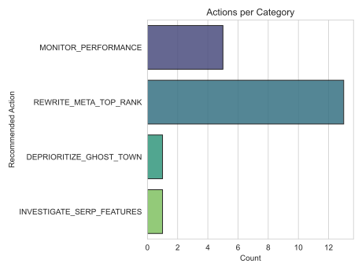

This paper investigated the predictability of Click-Through Rates (CTR) from macro discovery signals available to us to identify bad content. We analyzed an anonymized dataset of over 340k content records isolating pre-click discovery signals from downstream behavioral leakage. A static, client-grouped validation split was used to evaluate an XGBoost regression model against a baseline of Random Forest to approximate real-world generalization. Unseen client performance showed macro-signals as a strong directional support for content triaging, but not as a predictor of absolute CTR without the qualitative, page-level context. The output is a Content Action Playbook which prioritizes high-deficit pages for human-led meta-data optimization and SERP investigation.
This work supports decision making for Content Strategists and SEO Managers distributing editorial resources. The unit of analysis is a unique piece of content in a 90-day window. What comes out of this process is a ranked Content Action Playbook that links a mathematical "CTR Deficit" to specific triage actions (e.g., REWRITE_META_TOP_RANK). That's where machine learning works really well because search engagement metrics are non-linear. An ML regressor captures the complex interplay between rank, intent, and format better than static threshold rules. The cost of a bad call is time lost in editorial optimization of "ghost town" pages or acting on mathematical model hallucinations rather than real opportunities.
Target leakage was strictly audited and removed to allow for an honest modeling environment. We deliberately excluded any of the post-click downstream behavioral metrics (clicks_90d, sessions_90d, engagement_rate, scroll_rate) from the feature set, as ctr is mathematically derived from any of those events. Pseudonymous identifiers (content_id, client_id) were used solely for output tracking and validation grouping, never as predictive features. We confirmed that the raw dataset (content_refresh_anonymized.csv) does not include client-identifying PII, private queries, or raw URLs.
Using a standard Random Forest Regressor, we set up a baseline to predict the ctr target with clean, pre-click features. The exact features selected for the final model were avg_position, search_volume, main_intent (one-hot encoded), and content_type (one-hot encoded). The target proxy was ctr that is the continuous ratio of clicks to impressions over 90 days.
The models were validated using an 80/20 GroupShuffleSplit based on client_id. It would be dishonest to use a standard random split since it reveals domain authority of each particular client in the test set, artificially inflating the scores. With the help of groups based on client_id, the models had to predict unseen domains.
For the honest grouped split, the Random Forest baseline had an R² score of -0.5327 and a Mean Absolute Error (MAE) of 0.543. The XGBoost capstone model beat the baseline and scored R² = -0.2332, MAE = 0.496. Tree-based gradient boosting is a great fit for this lane because search behavior heavily exhibits right-skewed tails and thus sequentially minimizes prediction errors on non-linear distributions.
Error Analysis: The negative R² score value in the honest split shows that the model overfits to the baseline traffic of the training clients. The error distribution plots show that the model often generates CTR values greater than 20% for the pages that rank deep into Position 30+.

Feature importance observation shows that the algorithm bases itself almost completely on the avg_position and search_volume factors for making the prediction, while using categorical intent and format only as secondary factors. The R² score less than zero on unseen clients is an extremely important and well-known negative outcome: it demonstrates that universal ranking signals are not able to predict the CTR of a new brand. This is because qualitative factors (like compelling Title Tag copywriting and brand affinity) determine actual clicks, and thus, the macro-signals should be used for directional decision-support, but not as an absolute predictor.
The output from all of these steps is a Content Action Playbook that functions as a directional tool, which highlights those pages that need urgent human evaluation due to having CTR problems. Strategists should implement codes such as REWRITE_META_TOP_RANK to catch the missed demand, and INVESTIGATE_SERP_FEATURES to check whether dynamic designs in Google are impacting CTRs.
Safety Constraints: It should strictly be used as a decision-making tool. It should never be linked to any Generative AI pipeline to automatically rewrite meta-data, nor should Ghost Town pages be automatically deleted in Google Search Console.
The full pipeline and project outputs are available under this repository link: flyrank-ml-internship-starter/work/notebooks
pip install -r requirements.txt, venvrandom_state=42 initialization for reproducibility.Built on the FlyRank ML Internship dataset. Dataset sourced provided by: https://flyrank.ai